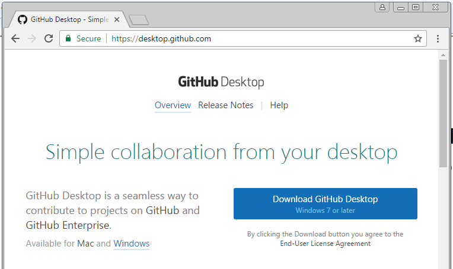
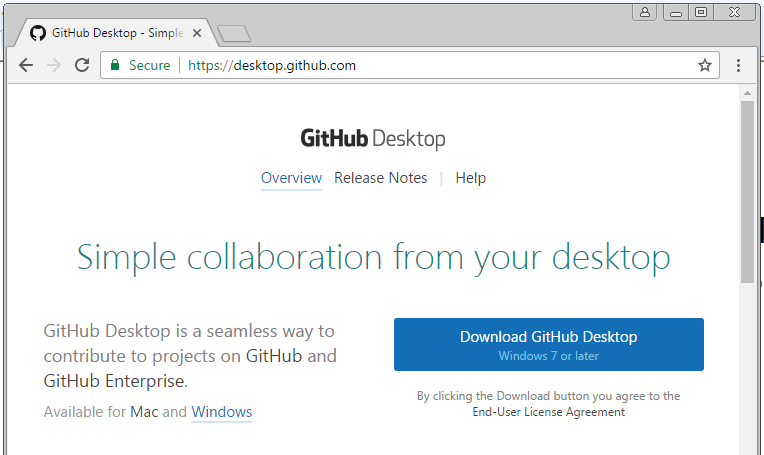

Lab 1
{kind=link}
Sharing your work using GitHub
This was an exercise for the first lab in this cartography course; to create and become familiar with GitHub where we will be submitting our assignments. Download Image

Holly Horan is a continuous fourth year student at Humboldt State University majoring in Wildlife Conservation/ Management and minoring in Geospatial Analysis. Primary interests are her daughter Stevey, her bulldog Dazy, and to be outside as much as possible.
This was an exercise for the first lab in this cartography course; to create and become familiar with GitHub where we will be submitting our assignments. Download Image
This lab we were aquainted with ArcPro, the process of creating a digital compilations and improving our map design skills. Download Image
For this lab we explored different projections deciding on the most appropriate for each scenario. Using tissot ellipses and graticule subsets on the final products I demonstrated how different projection can preserve and distort area, shape, size, and direction. Download Image
For this lab we became familiar with Adobe Illustrator; exporting maps from Arcmap to "Illustrator" and editing with the selection, and stroke tools. Download Image
For this lab we became more familiar with tools in ArcMap while creating different labeling elements in useful and time saving ways. Download Image
In this lab we used Adobe Illustrator to edit different components of our type and font using the Minnesota map from an earlier lab. We were shown how to use the transparency tool in Illustrator to create more readable text for a more proffesional looking map. Download Image
To create this small multiples map we downloaded census data from NHGIS, organised the data some, joined fields in Arcmap, then created small multiple maps to experiment with color options. Download Image
Here we got some practive using various terrain tools on Arcmap while creating some neat vintage style maps. We practiced making a Swiss hillshade, a cluster hillshade, and also learned how to make a "coastal vignette". Download Image
Here we mapped a European country and created 3 different maps generalizing some of its' features. Download Image
For our European country we generalized last week, this lab we found different ways to use symbolization tools to display different attractions in the country. Apparently I had some issues with this lab.Download Image
This map is supposed to show what percentage of the population in each county voted for the "Good Old Party" in the popular vote. Some of the techniques learned in this lab was to download a color pallet online and to utilize it in Adobe illustrator. Download Image
In November 2017 I took my daughter and my dog on a sponaenious road trip to see my partner's family for the holiday, and tosee a little bit more of the world. Here is a brief journal of the main highlights of the trip with pictures, information and videos of some of the places we were able to experience. Drop me a lineRecent Work
Lab 1

Sharing your work using GitHub
Lab 2
ArcGIS PRO and Creating Digital Comp Sheets
Lab 3

Projections Lab
Lab 4
Social Studies and Adobe Illustrator
Lab 5

Type:Maplex with ArcMap Lab
Lab 6
Type:Illustrator Lab
Lab 7
Small Multiples Map
Lab 8

Terrain Mapping
Lab 9
Generalization
Lab 10
Symbolization
Lab 11
GOP VOTES ELECTION MAP
Our Long Awaited Epic THanksgiving Vacation
Get In Touch
{kind=link}
{kind=link}
{kind=link}
{kind=link}
{kind=link}
{kind=link}
{kind=link}
{kind=link}
{kind=link}